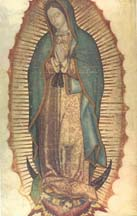

Virgen de Guadalupe
|  |
{kind=link}
Según la tradición de la Virgen de Guadalupe, ésta se apareció a un campesino indígena, Juan Diego, en el camino entre su pueblo y la ciudad de México en 1531. La Virgen le dijo en náhuatl que fuera a las autoridades eclesiásticas para que construyeran una iglesia en el lugar de la aparición, pero el obispo se negó a creer la historia sin alguna prueba. Juan Diego volvió al mismo lugar, donde la Virgen le mandó que recogiera en su tilma (la típica "toga" masculina de los mexicas) unas rosas que milagrosamente crecían allí, aunque era invierno. Al presentarlas al obispo se descubrió la imagen de la Virgen en su tilma, la que hoy se venera en la Basílica de Guadalupe en la Ciudad de México (aquí, la imagen superior). Las imágenes inferiores son dos páginas de un texto en náhuatl publicado en 1649 que es una de las dos fuentes documentales más antiguas sobre el milagro de la Virgen de Guadalupe. (El otro es de 1648 y está en castellano.) Los dos textos representan el esfuerzo por parte de la Iglesia de Nueva España para promover el culto de una Virgen local. El hecho de que uno de los textos se redactara en náhuatl puede verse como otro ejemplo de sincretismo "desde arriba", es decir, la promoción de ciertos elementos indígenas por parte de miembros de la élite europea y criolla, o bien como símbolo de identidad o (en el caso de la Iglesia) como herramienta de proselitismo entre las poblaciones indígena y mestiza. (Haz clic en las imágenes para ampliarlas.)
{kind=link}
{kind=link}